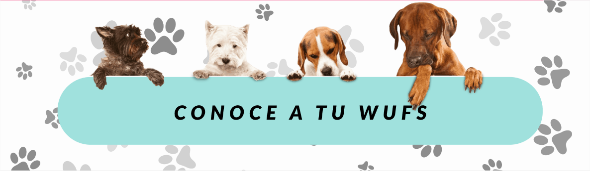

Volver a la galería

COSMO
3 años
Es un cachorro alegre y juguetón. Es bastante emocional y te recibe siempre saltando y con ánimos para jugar. Es muy sociable con todos y se divierte con pelotas. Como todo cachorro, necesita paciencia y educación. Sabe dar la patita.
Fecha aprox de nacimiento: Abril 2018
CARACTERÍSTICAS FÍSICAS
| Edad | 3 años |
| Tamaño | Pequeño |
| Sexo | Macho |
| Largo de Pelo | Corto |
SALUD
| Alergia | No |
| Tratamiento | No |
| Enfermedad Crónica | No |
HISTORIA
Matias fue abandonado cuando era un bebe y rescatado de la Panamericana norte, muy desorientado y deshidratado, en enero de 2019. Desde entonces se recuperó exitosamente dentro del albergue y ya está listo para ir a un hogar.
¡Lo quiero!